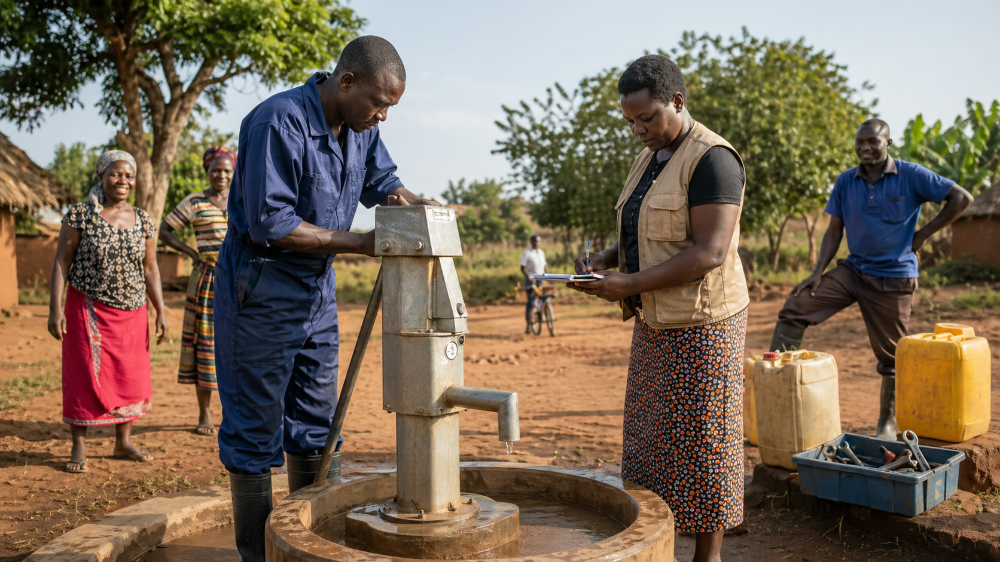

Legal Name
ARCHE INTERNATIONAL
Faith-rooted nonprofit ministry for community care, partnership, and Gospel-centered service.

Transparency
This page separates the public IRS record from the operational pieces that should be confirmed before donations, shipments, and project-specific gifts are accepted.
ARCHE INTERNATIONAL
27-0796734
Subsection code 03, deductibility code 1, status code 01.
Katherine Hichborn
1040 E Howell Ave, Anaheim, CA 92805-6406
196402 in the IRS Business Master File. The archived site describes the modern ministry launch in 2009.
Giving Readiness
The public IRS Business Master File was checked on April 27, 2026. The IRS page listed its EO BMF data posting date as April 14, 2026. The archived ministry content comes from Wayback Machine captures of `archeintl.org` and `archeintl.com`.